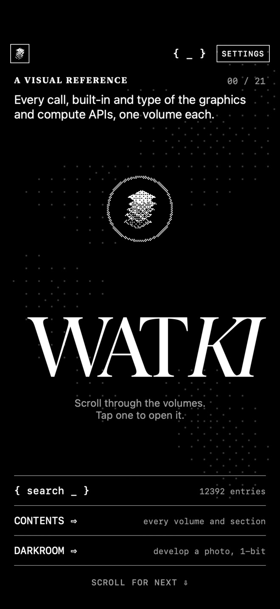
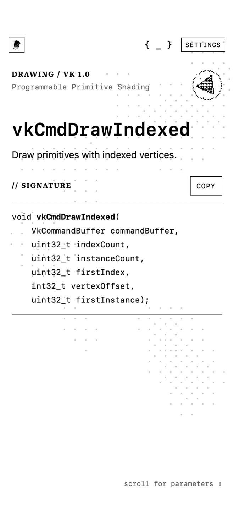
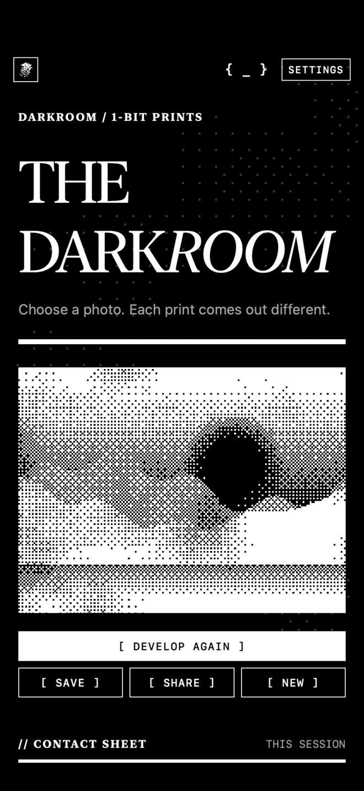
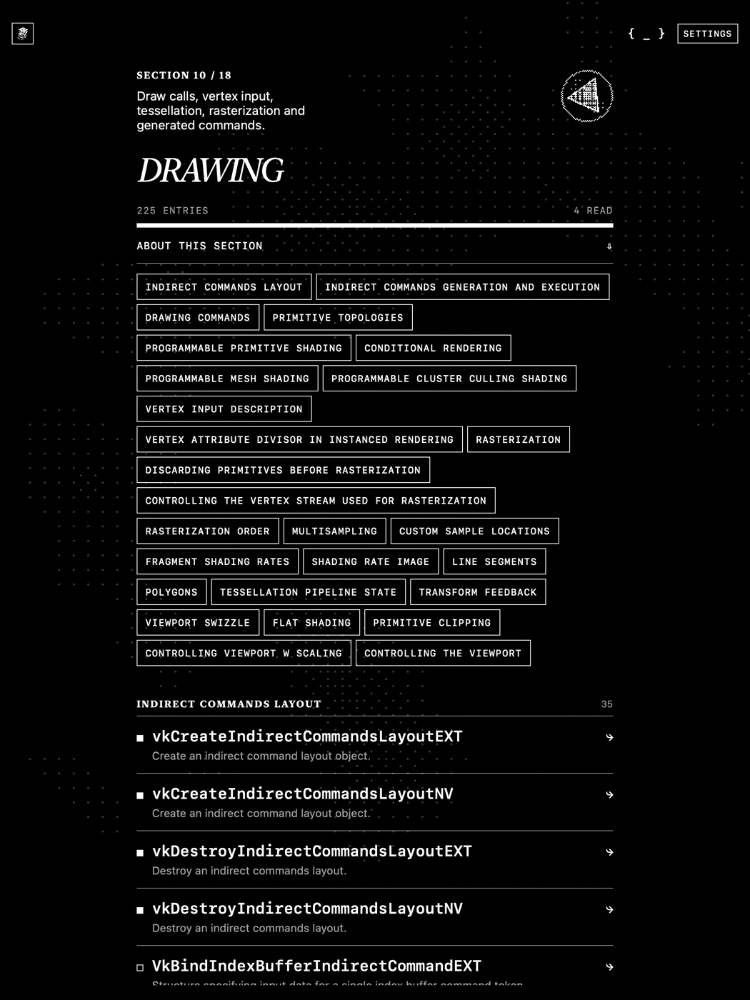

Inside / 21 volumes
The library
An offline field guide to open graphics, compute and XR standards. Every entry shows what it does, what it takes and where it fits, in a quiet black-and-white reader that works without a connection.




- OPENGL ES389
- VULKAN2923
- OPENGL 4.6535
- EGL158
- WEBGL331
- OPENCL522
- OPENXR1945
- OPENVG167
- OPENVX590
- SYCL771
- ANARI110
- VULKAN SC929
- OPENGL SC77
- SPIR-V833
- SLANG1018
- GLTF66
- KTX180
- COLLADA675
- NNEF152
- ML12
- SAFETY CRITICAL9
- Every entry, in full
The signature, parameters, return values and the version or extension that added it.
- { search _ }
Search one volume or all 21 at once.
- Keep and return
Keep the entries you use most, come back to recent ones and see how much of each volume you have read.
- A living background
A slow mist drifts behind the pages and follows the time of day. Thicken it, slow it, freeze it or give it a new pattern.
- The darkroom
Develop any photo as a 1-bit print and save it to your library.
- Offline and private
Everything ships inside the app. No account, no ads, no tracking.